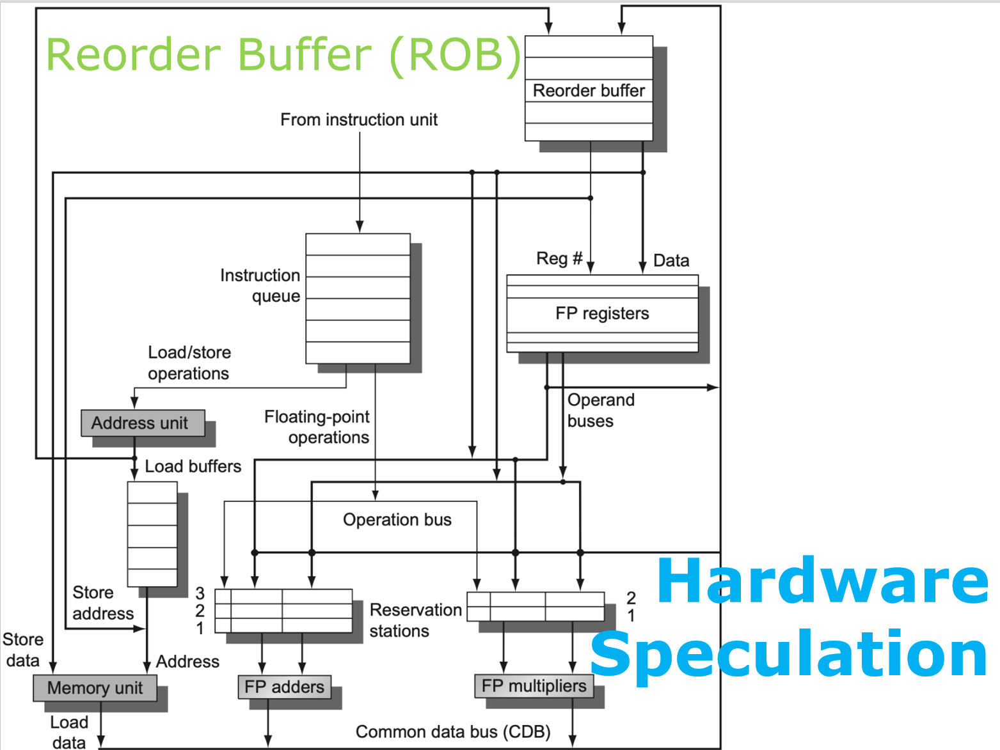
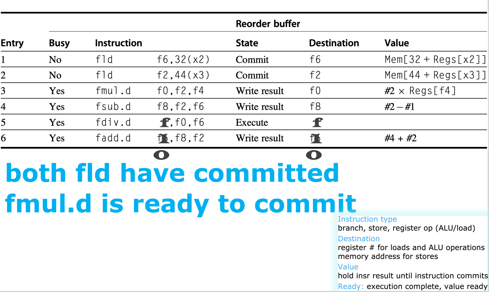

计算机体系结构3-1-4:硬件推测（Hardware Speculation）
第四节：硬件推测
硬件推测的核心思想非常直观，就像一位深思熟虑的将军在指挥战斗：
“让先锋部队（指令）大胆地向前探索（乱序执行），去攻占据点（计算结果），但不要立即向总部汇报战果并改变整个战线的部署（修改架构状态）。所有战果都先记录在临时日志上。等到后方确认这条进攻路线是正确的（分支预测正确、无异常），我们再根据日志，按照原定的作战计划顺序，正式宣布这些战果（按序提交）。”
这个策略将指令的执行过程分为了三个明确的阶段：
- 乱序执行 (Out-of-Order Execution)：指令可以像在 Tomasulo 中那样，一旦操作数就绪就执行。
- 乱序写结果 (Out-of-Order Write Result)：执行完的结果被存放到一个临时的、安全的缓冲结构中，而不是直接写入最终的目的地（寄存器堆或内存）。
- 按序提交 (In-Order Commit/Retirement)：系统会按照指令在原始程序中的顺序，逐一检查它们的执行结果。只有当一条指令和它之前的所有指令都被确认是正确的，它的结果才会被从临时缓冲中取出，永久性地写入架构状态（寄存器或内存）。
这个设计完美地结合了乱序执行的高性能和按序执行的正确性保障。而实现这一宏伟蓝图的关键硬件部件，就是那位将军手中的“临时作战日志”——重排序缓冲（Reorder Buffer, ROB）。
4.1 重排序缓冲 (ROB) 的设计
ROB 是一个先进先出（FIFO）的循环队列，它位于 Tomasulo 核心和最终的架构状态（寄存器堆/内存）之间。当一条指令被发射（Issue）时，它不仅会进入保留站，还会在 ROB 的队尾被分配一个条目。这条指令将“拥有”这个条目，直到它最终被提交（Commit）。

4.1.1 ROB 的角色转变
ROB 的引入，深刻地改变了 Tomasulo 体系结构中各个部件的角色和数据流：
- 结果的目的地变了：当一个功能单元在 CDB 上广播结果时，这个结果的主要目的地不再是寄存器堆，而是ROB 中对应的条目。当然，保留站仍然会监听 CDB 以获取等待的操作数。
- 操作数的来源多了：当一条指令在发射阶段查找源操作数时，它不仅要查寄存器状态表，如果发现操作数未就绪，它还要从 ROB 中获取（如果那个产生操作数的指令已经执行完但尚未提交）。因此，操作数的来源可以是寄存器堆或ROB。
- 寄存器重命名的“后台”变了：在 Tomasulo 中，寄存器状态表（Qi 字段）指向保留站。在引入 ROB 后，它直接指向产生结果的指令在 ROB 中的条目号。ROB 成为了所有未提交结果的唯一、集中的“物理存储”。
- 存储缓冲被“吸收”了：存储指令在提交之前不能修改内存。ROB 天然地提供了这种“暂存”能力。因此，独立的存储缓冲的功能可以被整合进 ROB。
4.1.2 ROB 条目的关键字段
ROB 的每个条目都需要记录足够的信息，来管理指令从执行到提交的整个过程。
- Instruction Type (指令类型)：指明这是一条分支、存储、还是普通的寄存器操作（ALU/Load）。这决定了在提交阶段需要执行何种操作。
- Destination (目标)：
- 对于寄存器操作，这里是目标寄存器的编号（如 F6）。
- 对于存储操作，这里是计算出的目标内存地址。
- Value (值)：存放指令执行完成后的结果。
- Ready (就绪)：一个比特位，
1表示指令已经执行完毕，其Value字段是有效的。
4.2 结合 ROB 的新指令生命周期
引入 ROB 后，指令的生命周期扩展为四个阶段：
-
Issue (发射)
- 条件：指令队列头部有指令，且有空闲的保留站和空闲的ROB 条目。
- 动作： a. 在 ROB 队尾为指令分配一个条目，记录其类型和目标寄存器。 b. 将该 ROB 条目的索引号（ROB tag）作为重命名的标识。更新寄存器状态表，使其指向这个 ROB tag。 c. 将指令发往保留站。在保留站中，不仅记录操作，还记录对应的 ROB tag。 d. 从寄存器堆或 ROB 中查找源操作数，填入保留站的 V/Q 字段。
-
Execute (执行)
- 条件：保留站的操作数就绪（V 字段有效）。
- 动作：功能单元执行计算。这个阶段和 Tomasulo 基本一致。
-
Write Result (写结果)
- 条件：执行完成。
- 动作：
a. 功能单元将结果和对应的 ROB tag 广播到 CDB。
b. ROB 监听到匹配的 tag，将结果写入相应条目的
Value字段，并将其Ready位置1。 c. 其他正在等待这个结果的保留站，也从 CDB 获取数据。
-
Commit (提交)
- 这是整个推测执行的核心，必须严格按序进行。
- 条件：ROB 队头的指令，其
Ready位为1。 - 动作：
- 对于普通寄存器指令：将
Value字段中的结果写入Destination字段指定的寄存器。 - 对于存储指令：将
Value（要存储的数据）写入Destination（内存地址）。 - 对于正确预测的分支：什么都不做，因为它只是一个控制流标记。
- 对于错误预测的分支：这是关键！ i. 冲刷（Flush） 整个 ROB 和所有保留站。 ii. 恢复寄存器映射表到分支指令执行前的状态。 iii. 告诉取指单元从正确的分支目标地址重新开始取指。
- 无论何种情况，只要提交完成（或被冲刷），就将该条目从 ROB 队头移除。
- 对于普通寄存器指令：将
4.3 实例详解：ROB 在行动
让我们用以下的例子来具体感受一下 ROB 是如何工作的。
L.D f6, 32(x2)
L.D f2, 44(x3)
fmul.d f0, f2, f4
fsub.d f8, f2, f6
fdiv.d f0, f0, f6
fadd.d f6, f8, f2

快照时刻设定：两条 fld 指令已经完成并提交。fmul.d 已经执行完，结果在 ROB 中，准备提交。fsub.d 也执行完了。fdiv.d 还在漫长的执行过程中。fadd.d 也执行完了。
Reorder Buffer (ROB) 状态分析：
Entry 1, 2：Busy=No。两条fld已经成功提交并从 ROB 队头移除。它们的Value已经永久写入了寄存器 F6 和 F2。Entry 3(fmul.d)：这是当前的 ROB 队头。State=Write result(应理解为Ready=Yes)，Value字段里是#2 x Regs[f4]的结果。因为它在队头且已就绪，所以在下一个时钟周期，它就可以被提交。提交时，它的值会被写入寄存器 F0。
Entry 4(fsub.d)：State=Write result,Ready=Yes。它也执行完了，但它不是队头，必须等待fmul.d提交。Entry 5(fdiv.d)：State=Execute。由于除法延迟很长，它还在执行中，Ready位为0。Entry 6(fadd.d)：State=Write result,Ready=Yes。它虽然执行快，但也必须排在fdiv.d后面等待提交。
FP Register Status (Reorder #) 状态分析：
这张表现在是“寄存器重命名表”，或者叫“别名表（Alias Table）”。
f0 -> 3：当前对 F0 的最新引用，应该去 ROB 的第 3 号条目 (fmul.d) 找。等等，例子里是fdiv.d f0, f0, f6，所以最新的 F0 应该是fdiv.d，即 ROB #5。f6 -> 6：最新版本的 F6 将由 ROB #6 (fadd.d) 产生。f8 -> 4：最新版本的 F8 将由 ROB #4 (fsub.d) 产生。f2,f4等寄存器没有指向 ROB 条目，说明它们的值是稳定的，可以直接从寄存器堆读取。
推演下一步的 Commit 过程：
-
Clock N：ROB #3 (
fmul.d) 在队头且Ready=1。Commit!- 将 ROB[3].Value 写入寄存器 F0。
- 更新寄存器状态表，如果
RegisterStat[f0].Reorder # == 3，则清空它。 - ROB #3 出队。ROB #4 (
fsub.d) 成为新的队头。
-
Clock N+1：ROB #4 (
fsub.d) 在队头且Ready=1。Commit!- 将 ROB[4].Value 写入寄存器 F8。
- 更新寄存器状态表
RegisterStat[f8]。 - ROB #4 出队。ROB #5 (
fdiv.d) 成为新的队头。
-
Clock N+2：ROB #5 (
fdiv.d) 在队头，但它的Ready位还是0！它还在执行。- 流水线停顿在提交阶段！ 即使后面的
fadd.d(ROB #6) 早已准备就绪，它也必须等待fdiv.d完成。
- 流水线停顿在提交阶段！ 即使后面的
这个例子清晰地展示了硬件推测是如何强制维持按序提交的，即使这会导致停顿。这是为精确异常（Precise Exceptions）和正确恢复付出的必要代价。如果 fdiv.d 在执行中发生了除零异常，由于它之前的指令都已经安全提交，而它和它之后的所有指令都还在 ROB 中，处理器可以简单地冲刷 ROB #5 及之后的所有条目，然后跳转到异常处理程序，状态非常干净。
总结：推测执行的伟大平衡
硬件推测与重排序缓冲（ROB）的结合，是现代高性能处理器设计的巅峰之作。它在 Tomasulo 算法的基础上，构建了一个近乎完美的动态调度框架：
- 性能：通过允许指令在分支解析和异常点确认前提早、乱序地执行，最大限度地隐藏了各种延迟，发掘了深层次的指令级并行。
- 正确性：通过严格的按序提交机制，确保了无论内部执行顺序如何“混乱”，最终呈现给程序员的架构状态都与程序顺序完全一致，并保证了在发生分支预测失败或异常时，系统可以恢复到一个精确、无误的状态。
它在“激进的乱序执行”和“保守的按序语义”之间，取得了一种精妙的平衡。从记分牌到 Tomasulo，再到硬件推测，我们看到了计算机体系结构如何一步步地从简单的流水线，演化成一个复杂的、分布式的、具备学习和预测能力的智能执行引擎。